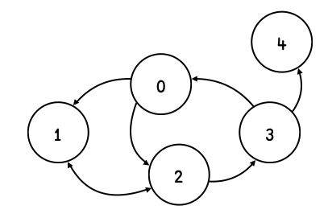

The dfns workspace
Contents
The dfns workspace#
Computers are like Old Testament gods; lots of rules and no mercy. –Joseph Campbell
Dyalog ships with a workspace called dfns. It’s perhaps best viewed as a set of diverse examples of … stuff. Hard to explain – maybe think of it as John Scholes’ scrap book, interesting snippets of APL code that may (or may not) be useful to other APLers. No other language I’m aware of has something like this – a folklore snapshot. The oral tradition of the language, written down.
As a “standard library” it’s hopelessly badly organized - so let’s not call it that, and it’s not the intention anyway. Yet it contains some real gems, and it’s outstandingly well documented, most entries accompanied by substantial essays. It contains interpreters for several languages, including Lisp, tons of utility routines, a pretty comprehensive set of functions for manipulating graphs, various non-trivial data structures (avl, splay, redblack) etc etc.
For the learner, perhaps the most productive use of the dfns ws is as inspiration: browsing through it, learning from its examples and well-documented implementations. I thought I’d highlight some of the things I’ve discovered in there and found useful.
iotag#
A very useful little function is iotag, for iota-generalized, although I can’t help but read it io-tag. It fleshes out the built-in iota, ⍳, both in its monadic and dyadic forms. Let’s look at a few examples:
'iotag' ⎕CY 'dfns' ⍝ Load the iotag function
Inclusive range start to end:
10 iotag 20 ⍝ ⍺ to ⍵ inclusive range
…and which can also count down:
20 iotag 10
and is fine with negative numbers, too:
¯10 iotag ¯20
¯20 iotag ¯10
We can also specify a step-size:
10 iotag 21 2
which doesn’t even have to be integer
10 iotag 21 0.53
It also understands letters:
'Q' iotag 'H'
It can do many, many more things, also generalizing the index-of aspect of iota.
segs#
The segs function splits a character vector on a set of separator chars. Whilst the implementation is simple enough to memorize – and easy enough to derive – it’s a handy tool to have access to.
'segs' ⎕CY 'dfns'
',;: ' segs 'one,two;three four,;:five,six,'
There isn’t much to this:
',;: ' {(~⍵∊⍺)⊆⍵} 'one,two;three four,;:five,six,'
cmat and pmat#
cmat and pmat generates combinations and permutations respectively.
'cmat' 'pmat' ⎕CY 'dfns'
Starting with cmat, what unique ways can we combine three numbers out of 1, 2, 3, 4 and 5?
3 cmat 5
Or 3 out of 5 letters?
↓3{⍵[⍺ cmat⍴⍵]}'abcde'
Note that cmat produces results that are lexicographically ordered.
Moving on to pmat we generate permutations instead – given an integer right argument, produce all the different ways that many items can be ordered.
pmat 4
span, stpath and scc#
There is also an excellent set of routines for graph manipulation, path finding and searching. Whilst a full intro to those is beyond the scope I had in mind for this, we can show some simple examples that perhaps can serve as a jump-off point. The documentation is comprehensive and excellent.
When we deal with graphs, we want to separate the graph structure from the content. The graph routines in the dfns ws only deal with graph structure, so it’s up to you to relate that back to content. We’ll look at how this is done.
So a graph consists of a set of vertices, connected by edges that have a direction. We represent the connectivity as a vector of vectors, where the position is the “vertex id” and the content a list of other vertices reachable from here. So, for example, the graph g
⎕IO←0
g ← ⎕ ← (1 2)(,2)(1 3)(0 4)(,⍬)
could be visualized like so:

We can easily create a separate vector that holds each vertex’s contents if we wanted to, say
vertices ← 'adam' 'bob' 'charlotte' 'damian' 'erica'
Let’s load up a few of the graph functions:
'span' 'stpath' 'scc'⎕CY 'dfns'
…and a little helper function to show graph structure:
show←{↑⍕¨(⍳⍴⍵),¨'→',¨⍵}
show g
The function span finds the spanning tree of a graph, which is basically removing any cycles whilst not making any previously reachable vertices unreachable. So let’s find the (actually, one of potentially several) spanning tree for our graph g, rooted at vertex 0, using the function called span:
st ← g span 0
Now that we have a spanning tree, we can find shortest paths in the graph. For example, what’s the shortest path from adam (vertex 0) to erica (vertex 4)? For this we apply the function stpath, spanning tree path:
vertices[st stpath 4]
By pre-calculating the spanning tree, we can do quick path finding to any other node in the graph. Note though that this approach will only find one shortest path, even if several of equal length might exist.
The implementations for span and stpath are worth studying. Note, however, that for many path-finding applications in graphs, as the graph gets bigger there are other algorithms worth considering, like Dijkstra’s shortest path, or its heuristic cousin, A*, that would cut the search space.
Strongly Connected Components#
The function scc implements Tarjan’s algorithm for finding the strongly connected components of a graph. The strongly connected components are groups of interconnected vertices, so for example a graph defined by the following adjacency index vector
⎕IO ← 1
⎕ ← graph ← (,2) (1 8) ⍬ (,10) (,9) (,10) (,9) (,2) (5 7) (4 6)
has the following strongly connected components (graph has vertices labeled ⍳10):
1 2 8
3
4 6 10
5 7 9
Note how vertex 3 is not connected to any other vertices and so forms its own connected component. We can use scc directly on the graph adjacency index vector to label each vertex with a connected component index:
]display ↑(⍳10) (scc graph)
In the dfns ws there are also graph algorithms operating on weighted graphs – where each edge has a cost that can differ from 1.
If you’re interested in using APL for graphs, there is a complete example provided for route planning in various tube systems of world cities for you to study.